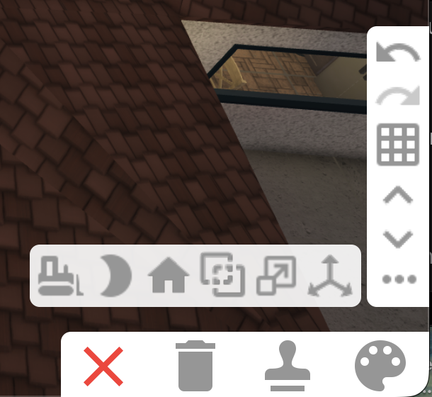

Building
Building mode is where you can create and customize your house. The Build tab is where you access doors, flooring, walls, windows, roofs, and other structural components of your house. The Decorate tab has everything you can use to furnish your house.

Building tools
Inventory: When you delete event items or items bought with Bloxbux, they go to your inventory, where you can take them back out when you want.
Bulldoze: Deletes everything on your plot.
Moon button: Changes the lighting to daytime or nighttime.
House button: Makes your roof invisible.
Overlapping squares button: Enables or disables object collisions. This requires the Advanced Placement game pass.
Three arrows button: This is the Transform Tool. It allows you to move and rotate objects to different angles or positions. This requires the Transform Plus game pass.

More buttons
Below these buttons are Exit, Delete, Copy, and Paint buttons. To the right of all this are Undo and Redo buttons, a grid button that lets you increase or decrease the studs you move things by, and up and down arrows that adjust which floor you are editing.